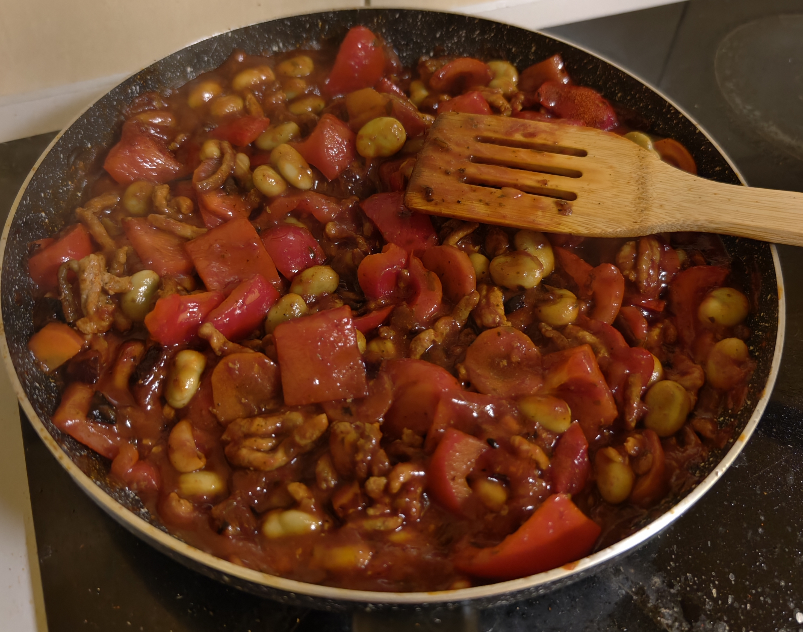

One-Pan Meat and Veggies

Description
Looking for a simple, high-protein meal that doesn't compromise on taste? This easy
skillet recipe is your answer! Everything comes together in one pan, making both cooking and cleanup a breeze.
The combination of spicy paprika, tender vegetables, and rich
meat creates a mouth-watering meal that's ready in no time.
Ingredients
- 1-2 tablespoons of cooking oil (e.g., olive or canola oil)
- 500g ground meat (Beef would be great here but can be pork or turkey)
- 1 medium onion, chopped
- 2-3 cloves of garlic, minced
- 1 large carrot, diced
- 1 bell pepper (Red or yellow would be sweet), chopped
- 1 can (400g) of diced tomatoes
- 1 can (400g) of beans (Kidney beans or black beans are perfect), drained and rinsed
- 1 teaspoon hot paprika (or more, to taste)
- 1 teaspoon smoked paprika
- Salt and black pepper, to taste
- Skyr, for serving
Steps
- Heat the oil in a large skillet or pan over medium-high heat.
Add the ground meat, season with salt and pepper, and cook until browned, breaking it up with a spoon.
Once cooked, remove the meat from the pan and set it aside.
- In the same pan, add the chopped onion, carrot, and bell pepper.
Sauté for 5-7 minutes until they begin to soften.
- Add the minced garlic and cook for another minute until fragrant.
- Return the browned meat to the pan. Add the can of diced tomatoes (with their juice),
the drained beans, the hot paprika, and the smoked paprika. Stir everything together.
- Bring the mixture to a simmer and let it cook for 10-15 minutes, allowing the flavors to meld together.
Taste and adjust seasoning with more salt, pepper, or paprika if needed.
- Serve hot in bowls with a generous dollop of skyr on top.
Homepage